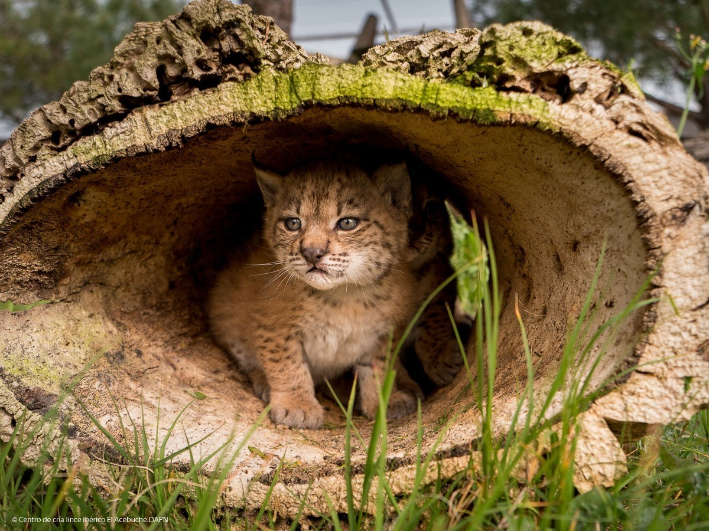

El lince ibérico (Lynx pardinus, perteneciente a la familia Felidae) es el felino que se encuentra clasificado como el más amenazado del planeta. Es endémico de la Península Ibérica, donde sus poblaciones llegaron a estar al borde de la desaparición. Actualmente, su categoría de amenaza ha sido rebajada de “En peligro crítico” a “En peligro de extinción”, lo cual sigue causando cierta preocupación, ya que sus poblaciones no están completamente recuperadas y solo es posible verlo en unos pocos sitios de su área de distribución. Es una especie muy sensible a la transformación de su entorno y, a su vez, muy específica en cuanto a su dieta, ya que depende estrictamente del conejo de monte. Si quieres conocer si el lince ibérico está en peligro de extinción, por qué y qué planes de recuperación existen, continúa leyendo este artículo de ExpertoAnimal y te contaremos todo sobre esto.
